• Youtube :
https://www.youtube.com/@sssrobotics

📌 안녕하세요!
S급 로봇 연구소(SSS Robotics)입니다. 🤖이번 시간에는 이동로봇에서 로봇팔로 학습 범위를 확장합니다.
ROS 2의 robot_description을 활용하여 UR10e 로봇팔을 가져오고, Mesh Merge Tool로 에셋을 최적화합니다. 이후 Robot Assembler를 이용해 그리퍼를 장착하고, IK(Inverse Kinematics)를 활용하여 목표 위치에 따라 로봇팔을 움직여 보겠습니다.
마지막으로 창고 환경에 로봇과 작업물을 배치하여 실제 작업 상황과 유사한 시뮬레이션 장면을 구성합니다.

📚 목차
- 📖 오늘의 진행 내용 (Today's Topics)
- 📕 1. 로봇 에셋 구조와 OpenUSD 모범사례
- 📄 1-1. URDF와 USD의 차이
- 📄 1-2. Joint Type 이해하기
- 📄 1-3. 로봇 에셋의 기능별 분리
- 📄 1-4. Variant란?
- 📕 2. Mesh Merge Tool을 활용한 에셋 최적화
- 📄 2-1. Mesh Merge Tool이란?
- 📄 2-2. 메시 통합 실습
- 로봇 핸드 불러오기
- 📄 2-3. 메시 정리와 위치 조정
- 📄 2-4. 충돌체 설정
- 로봇 핸드 옵티마이즈 작업 진행 중
- 📄 2-5. 최적화 결과 확인
- 📕 3. ROS 2를 활용한 UR10e 가져오기
- 📄 3-1. ROS 2 robot_description이란?
- 사용하려는 로봇은 Universal Robots UR10e
- 지금 진행하는 작업의 핵심은 ROS 2에 등록된 로봇의 설계 정보를 Isaac Sim으로 가져와서 가상 로봇을 만드는 것
- 📄 3-2. UR10e 패키지 준비
- 📄 3-3. Isaac Sim에서 UR10e 가져오기
- 📄 3-4. URDF Import 결과 확인
- 📕 4. Robot Assembler와 Variant로 그리퍼 장착
- 📄 4-1. Robot Assembler란?
- 📄 4-2. 그리퍼 에셋 가져오기
- 📄 4-3. Robot Assembler 설정
- 📄 4-4. 그리퍼 연결 확인
- 📄 4-5. Variant로 그리퍼 구성 변경하기
- 📕 5. 창고 환경 구성 및 물리 시뮬레이션
- 📄 5-1. 학습 장면 구성하기
- 📄 5-2. Reference와 Payload의 차이
- 📄 5-3. 로봇과 작업물 배치
- 📄 5-4. Physics Inspector로 물리 확인
- 📕 6. IK(Inverse Kinematics)를 활용한 로봇팔 제어
- 📄 6-1. IK란?
- 📄 6-2. IK 동작 과정
- 📄 6-3. IK 실습
- 📄 6-4. IK의 한계 이해하기
- 📄 6-5. 추가 실습 미션
- 📜 회고 및 다음 과제 (Retropective&Next Steps)
- 💡 오늘 배운 핵심 내용
- 📝 DLI 1 통합 실습 미션 (2H)
- A. 나만의 로봇 학습 장면 만들기
- B. 실습 조건
- 👥 참고 문헌 (References)
- 📨 문의하기 (Contact us)
📖 오늘의 진행 내용 (Today's Topics)
📕 1. 로봇 에셋 구조와 OpenUSD 모범사례
📄 1-1. URDF와 USD의 차이
URDF와 USD는 로봇을 표현하는 데 사용되지만 목적과 역할에 차이가 있습니다.
- URDF: 로봇의 링크, 관절, 질량, 관성 및 형상 등을 정의하는 로봇 설명 형식입니다.
- USD: 3D 장면과 객체, 물리 속성, 재질 및 에셋 간의 관계를 표현하는 데이터 형식입니다.
URDF로 정의된 로봇을 USD로 변환하면 Isaac Sim에서 다양한 시뮬레이션 작업에 활용할 수 있습니다.
📄 1-2. Joint Type 이해하기
로봇의 관절은 연결된 부품이 어떤 방식으로 움직이는지를 정의합니다.
주요 관절 종류는 다음과 같습니다.
- Revolute: 회전 범위가 제한된 회전 관절입니다.
- Continuous: 회전 범위 제한 없이 계속 회전하는 관절입니다.
- Prismatic: 직선 방향으로 이동하는 관절입니다.
- Fixed: 두 부품을 고정하는 관절입니다.
- Mimic: 다른 관절의 움직임을 따라가는 관절입니다.
예를 들어 이동로봇의 바퀴는 Continuous 관절을 사용하고, 로봇팔의 관절은 일반적으로 Revolute 관절을 사용합니다.
📄 1-3. 로봇 에셋의 기능별 분리
OpenUSD에서는 로봇 에셋을 기능별로 나누어 관리할 수 있습니다.
이번 교육에서는 Robotiq 그리퍼를 예시로 다음과 같은 구조를 살펴봅니다.
- Base: 로봇의 외형과 메시를 관리합니다.
- Physics: 충돌체와 물리 속성을 관리합니다.
- Robot: 로봇의 관절과 제어 관련 정보를 관리합니다.
- Sensor: 센서 관련 정보를 관리합니다.
이처럼 기능별로 에셋을 분리하면 필요한 부분만 수정하고 재사용하기 편리합니다.
📄 1-4. Variant란?
Variant는 하나의 USD 에셋 안에 여러 가지 구성 상태를 저장하고 선택할 수 있는 기능입니다.
예를 들어 그리퍼의 센서나 물리 속성을 켜고 끄거나, 로봇에 그리퍼가 장착된 상태와 장착되지 않은 상태를 선택할 수 있습니다.
실제 로봇에서 도구를 교체하는 것처럼 다양한 구성을 효율적으로 관리할 수 있습니다.
📕 2. Mesh Merge Tool을 활용한 에셋 최적화
📄 2-1. Mesh Merge Tool이란?
Mesh Merge Tool은 여러 개의 메시를 하나로 합치는 도구입니다.
CAD 프로그램에서 가져온 로봇 모델은 하나의 부품에도 여러 개의 메시가 포함되어 있는 경우가 많습니다.
메시가 지나치게 많으면 렌더링과 충돌 계산에 부담이 발생할 수 있습니다.
Mesh Merge Tool을 사용하면 여러 메시를 하나로 통합하여 에셋을 최적화할 수 있습니다.
📄 2-2. 메시 통합 실습
이번 실습에서는 Robotiq 2F-140 그리퍼의 손가락 부분을 최적화합니다.
robotiq_2f_140_base.usd파일을 엽니다.- Tools > Robotics > Asset Editors > Mesh Merge Tool을 실행합니다.
right_inner_finger의 메시를 선택합니다.- Submeshes, Geometry Subsets, Materials 구성을 확인합니다.
- Combine Materials 옵션을 활성화합니다.
- MERGE를 실행하여 하나의 메시로 통합합니다.
로봇 핸드 불러오기
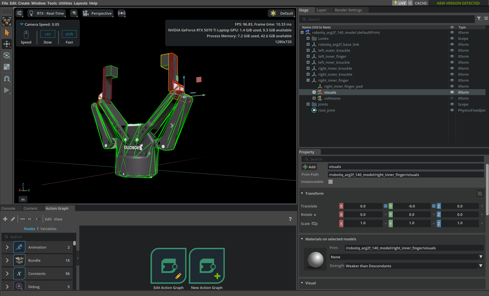
📄 2-3. 메시 정리와 위치 조정
합쳐진 메시를 기존 손가락 구조에 배치하고 위치를 조정합니다.
이후 기존에 사용하던 중복 메시를 삭제하여 불필요한 데이터를 정리합니다.
이번 실습에서는 손가락 메시를 2개에서 1개로 통합하는 과정을 진행합니다.
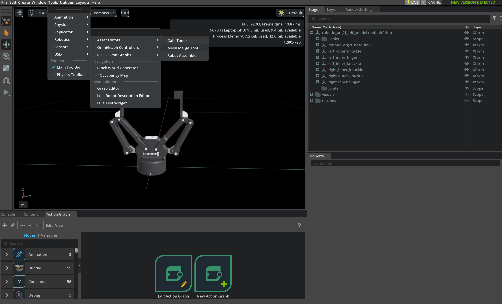
📄 2-4. 충돌체 설정
메시를 합치는 것만으로는 물리적인 충돌 계산이 완성되지 않습니다.
새롭게 생성된 메시에도 충돌체를 설정해야 합니다.
Property > Physics > Collider에서 Approximation을 Convex Hull로 변경합니다.
Convex Hull은 물체의 외형을 감싸는 볼록한 형태로 충돌 영역을 근사하는 방식입니다.
이를 통해 로봇 손가락과 주변 물체 사이의 충돌을 시뮬레이션할 수 있습니다.
로봇 핸드 옵티마이즈 작업 진행 중
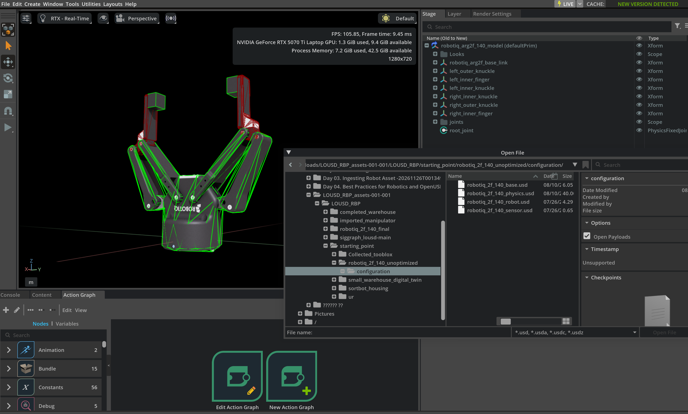
📄 2-5. 최적화 결과 확인
최적화된 그리퍼를 다시 열어 충돌체와 관절을 확인합니다.
finger_joint의 Target Position을 35로 설정하여 손가락이 정상적으로 움직이는지 확인합니다.
하나의 관절을 변경했을 때 나머지 손가락도 함께 움직이면 Mimic 관절이 정상적으로 동작하는 것입니다.
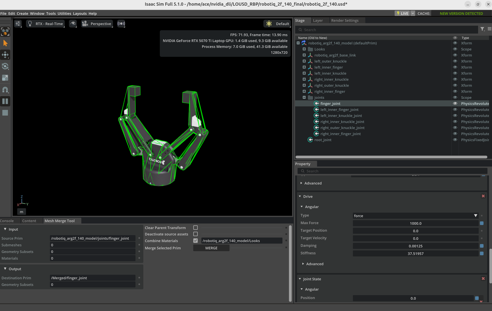
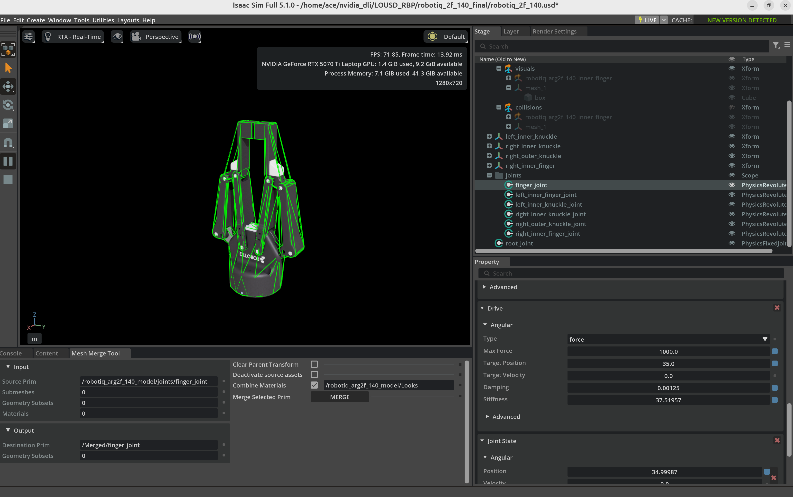
📕 3. ROS 2를 활용한 UR10e 가져오기
📄 3-1. ROS 2 robot_description이란?
로봇 제조사에서는 일반적으로 로봇의 구조를 URDF 또는 Xacro 형식으로 제공합니다.
ROS 2에서는 robot_state_publisher가 로봇의 설명 정보를 관리하고, Isaac Sim은 해당 정보를 전달받아 로봇을 가져올 수 있습니다.
이번 실습에서는 Universal Robots의 UR10e 모델을 사용합니다.
사용하려는 로봇은 Universal Robots UR10e
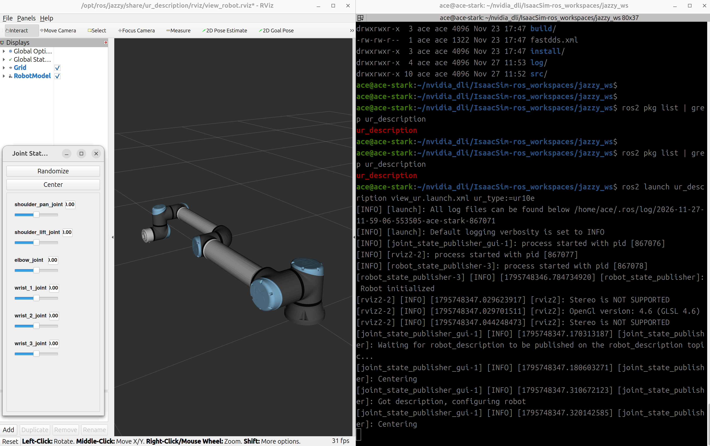
지금 진행하는 작업의 핵심은 ROS 2에 등록된 로봇의 설계 정보를 Isaac Sim으로 가져와서 가상 로봇을 만드는 것
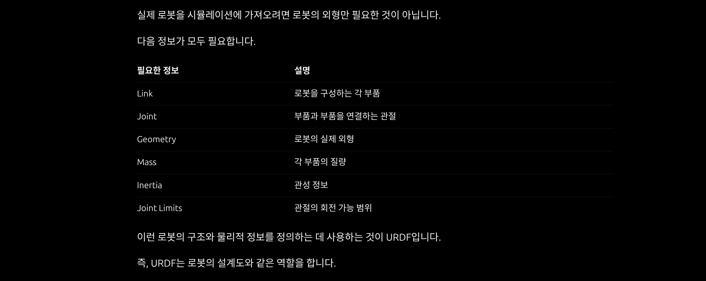
📄 3-2. UR10e 패키지 준비
ROS 2 워크스페이스에서 Universal Robots의 로봇 설명 패키지를 준비합니다.
ur_description 패키지를 빌드하고 실행하여 UR10e의 로봇 설명 정보를 제공합니다.
주요 실행 과정은 다음과 같습니다.
- Universal Robots ROS 2 Description 저장소를 가져옵니다.
colcon build로 패키지를 빌드합니다.source install/setup.bash를 실행합니다.ur_type:=ur10e옵션으로 로봇 설명 노드를 실행합니다.ros2 node list를 통해 노드가 실행되었는지 확인합니다.
📄 3-3. Isaac Sim에서 UR10e 가져오기
Isaac Sim의 File > Import from ROS2 URDF Node 메뉴를 실행합니다.
Node 항목에 robot_state_publisher를 입력하면 ROS 2에서 제공하는 UR10e 관절 정보를 불러올 수 있습니다.
주요 설정은 다음과 같습니다.
- Links: Static Base
- Joint Configuration: Natural Frequency
- Joint Target: Position
- Natural Frequency: 관절 6개 모두 300
IMPORT를 실행하면 Stage에 /World/ur가 생성됩니다.
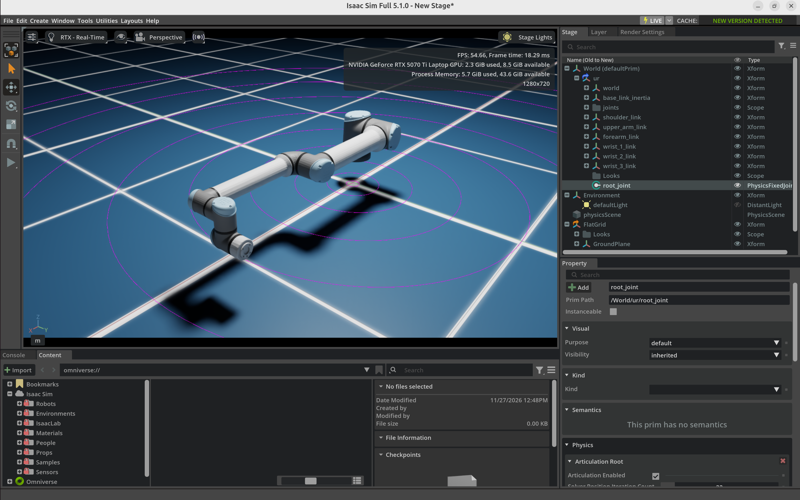
📄 3-4. URDF Import 결과 확인
가져온 UR10e의 링크와 관절 구조를 확인합니다.
UR10e는 총 6개의 회전 관절을 가지고 있으며, 각 관절의 위치와 움직임을 Isaac Sim에서 확인할 수 있습니다.
이를 통해 ROS 2에서 관리하는 로봇 정보를 Isaac Sim으로 가져오는 과정을 이해합니다.
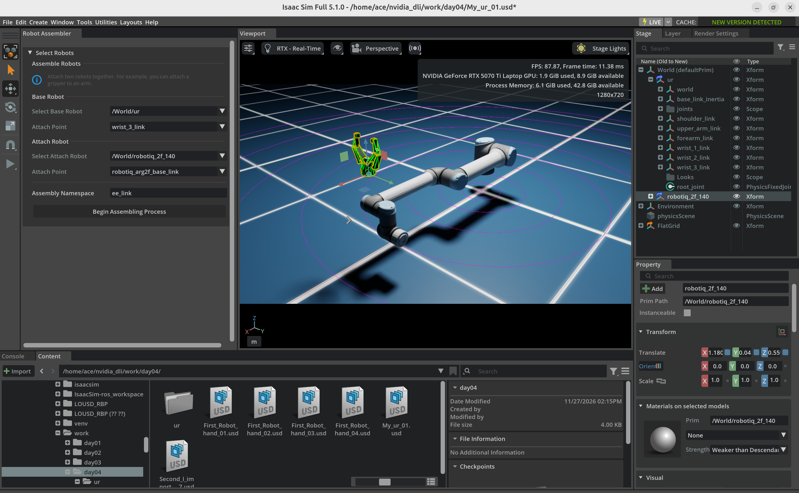
📕 4. Robot Assembler와 Variant로 그리퍼 장착
📄 4-1. Robot Assembler란?
Robot Assembler는 서로 다른 로봇 에셋을 연결하는 도구입니다.
이번 실습에서는 UR10e 로봇팔에 Robotiq 2F-140 그리퍼를 장착합니다.
각각 별도로 존재하는 로봇 에셋을 연결하여 하나의 로봇 시스템으로 구성할 수 있습니다.
📄 4-2. 그리퍼 에셋 가져오기
UR10e USD 파일을 열고 그리퍼 USD 파일을 Reference로 추가합니다.
이번 실습에서는 다음 파일을 사용합니다.
- 로봇팔:
ur.usd - 그리퍼:
robotiq_2f_140.usd
그리퍼를 UR10e 아래에 추가한 후 Stage에서 구조를 확인합니다.
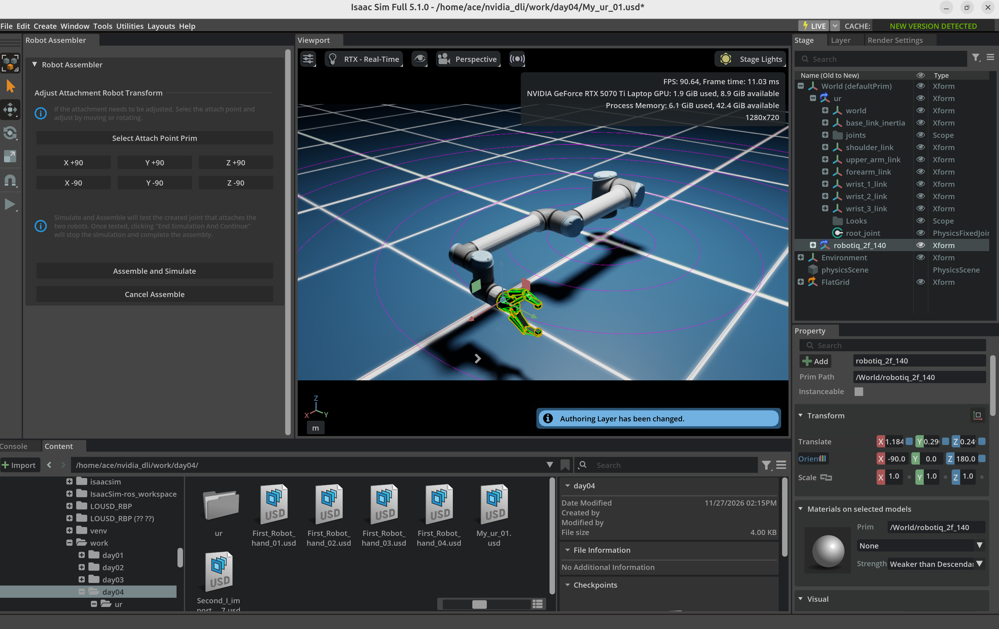
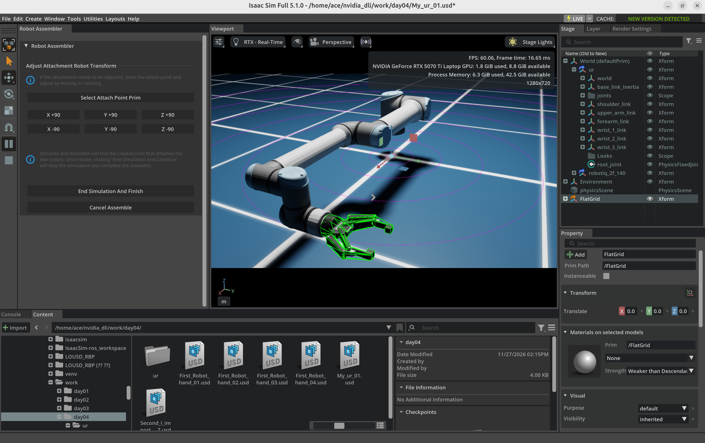
📄 4-3. Robot Assembler 설정
Tools > Robotics > Asset Editors > Robot Assembler를 실행합니다.
다음 항목을 설정합니다.
- Base Robot:
/ur - Attach Robot:
/ur/robotiq_2f_140 - Base Robot Attach Point:
wrist_3_link - Attach Robot Attach Point:
robotiq_arg2f_base_link - Assembly Namespace:
ee_link
Begin Assembling Process를 실행하고 그리퍼의 방향을 조정합니다.
Z +90 설정을 적용하여 그리퍼가 로봇 손목 방향에 맞게 연결되도록 합니다.
📄 4-4. 그리퍼 연결 확인
Assemble and Simulate를 실행하여 시뮬레이션 중에도 그리퍼가 로봇 손목에 정상적으로 연결되어 있는지 확인합니다.
정상적으로 연결되었다면 End Simulation And Finish를 실행하고 USD 파일을 저장합니다.
📄 4-5. Variant로 그리퍼 구성 변경하기
UR10e의 Property에서 Variants > ee_link 항목을 확인합니다.
다음 두 가지 구성을 선택할 수 있습니다.
- None: 그리퍼가 장착되지 않은 상태입니다.
- robotiq_2f_140: 그리퍼가 장착된 상태입니다.
Variant를 변경하면 로봇팔의 그리퍼 장착 여부를 간편하게 전환할 수 있습니다.
📕 5. 창고 환경 구성 및 물리 시뮬레이션
📄 5-1. 학습 장면 구성하기
이번에는 로봇팔이 실제 작업을 수행할 수 있도록 창고 환경을 구성합니다.
File > New로 새로운 장면을 생성한 후 다음 에셋을 배치합니다.
- Small Warehouse Digital Twin: 창고 환경입니다.
- Sortbot Housing: 로봇 작업을 위한 받침대입니다.
- UR10e + Gripper: 작업을 수행할 로봇팔입니다.
- Toolbox: 로봇이 집어 올릴 작업 대상입니다.
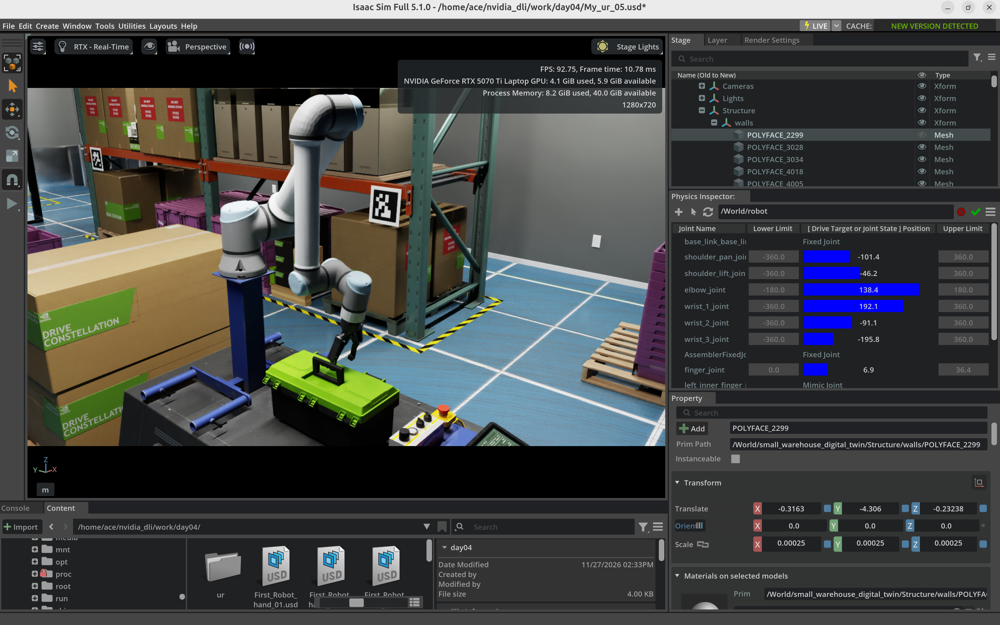
📄 5-2. Reference와 Payload의 차이
OpenUSD에서는 외부 에셋을 현재 장면에 연결하는 여러 방법을 제공합니다.
- Reference: 외부 USD 에셋을 현재 장면에 참조하여 추가합니다.
- Payload: 필요한 시점에 외부 에셋을 불러올 수 있도록 구성합니다.
이번 실습에서는 창고와 받침대, 작업물은 Reference로 추가하고 로봇팔은 Payload로 추가합니다.
이러한 방식을 사용하면 원본 에셋을 별도로 관리하면서 여러 장면에서 재사용할 수 있습니다.
📄 5-3. 로봇과 작업물 배치
창고 환경에 로봇팔과 Toolbox를 배치하고 위치를 조정합니다.
로봇팔이 작업물을 집을 수 있도록 위치와 높이를 확인합니다.
완성된 장면은 warehouse_scene.usd로 저장합니다.
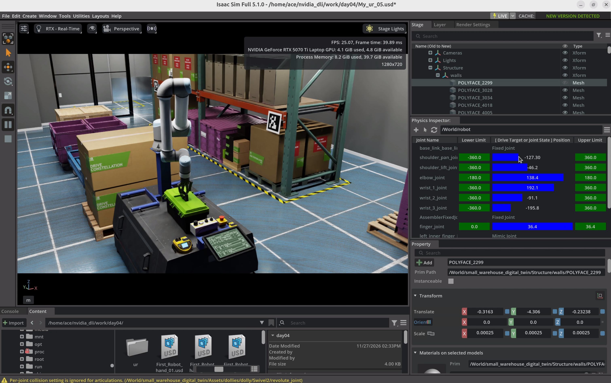
📄 5-4. Physics Inspector로 물리 확인
Tools > Physics > Physics Inspector를 실행합니다.
로봇을 선택한 후 각 관절의 Drive Target과 Joint State를 확인합니다.
슬라이더를 조정하거나 값을 입력하여 로봇팔의 관절이 정상적으로 움직이는지 확인합니다.
물리 설정이 정상적으로 구성되어 있다면 해당 장면을 Isaac Lab의 학습 및 테스트 환경으로 활용할 수 있습니다.
📕 6. IK(Inverse Kinematics)를 활용한 로봇팔 제어
📄 6-1. IK란?
IK(Inverse Kinematics)는 역기구학이라고 하며, 로봇의 끝부분이 목표 위치에 도달하기 위해 필요한 각 관절의 회전값을 계산하는 방법입니다.
일반적인 로봇팔은 여러 개의 관절로 연결되어 있습니다.
목표 위치가 주어지면 IK는 해당 위치에 도달하기 위한 관절의 움직임을 계산합니다.
예를 들어 로봇팔이 특정 위치에 있는 상자를 집으려면 각 관절이 어느 정도 회전해야 하는지 계산해야 합니다.
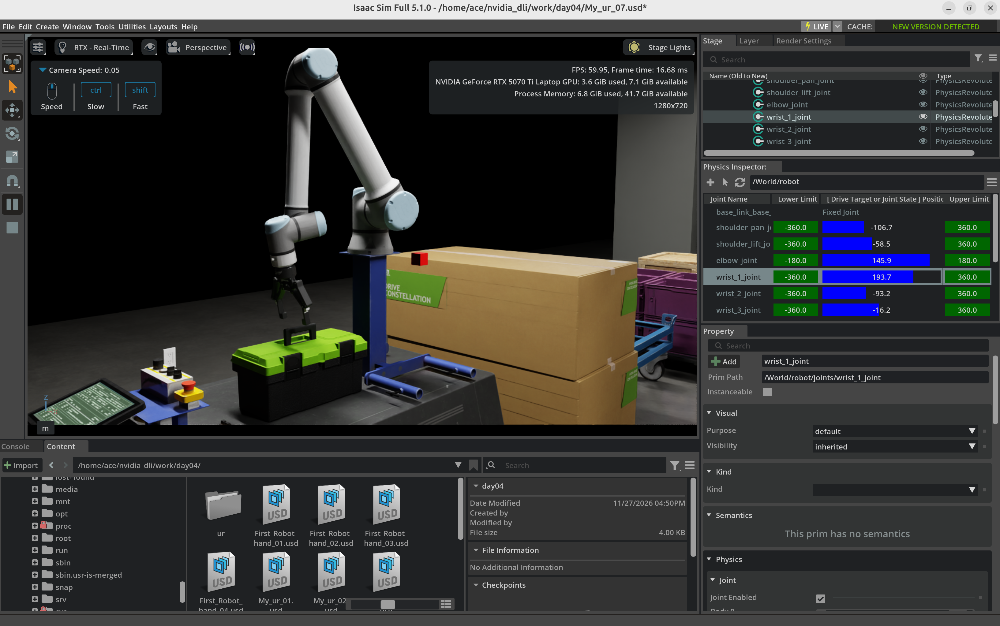
📄 6-2. IK 동작 과정
이번 실습에서는 다음과 같은 흐름으로 로봇팔을 제어합니다.
- TargetCube를 목표 위치로 설정합니다.
- Lula IK Solver가 목표 위치에 도달하기 위한 관절 각도를 계산합니다.
- Articulation Controller가 계산된 관절값을 로봇에 전달합니다.
- UR10e 로봇팔이 목표 위치를 향해 움직입니다.
📄 6-3. IK 실습
Isaac Sim을 종료한 후 제공된 follow_target_example.py 예제 스크립트를 실행합니다.
스크립트에서 asset_path를 자신의 학습 장면 경로로 변경하고, 그리퍼의 끝부분을 나타내는 Prim 경로가 올바른지 확인합니다.
실행 후 Stage에서 /World/TargetCube를 이동하면 로봇팔의 끝부분이 목표 위치를 따라 움직입니다.
N 키를 사용하여 그리퍼를 열고 닫을 수도 있습니다.
📄 6-4. IK의 한계 이해하기
IK는 목표 위치에 도달하기 위한 관절 각도를 계산하지만 주변 장애물과의 충돌을 자동으로 해결하지는 않습니다.
예를 들어 로봇팔이 공구함이나 받침대에 막히면 목표 위치까지 도달하지 못할 수 있습니다.
또한 로봇팔이 도달할 수 없는 위치를 목표로 설정하면 IK 경고가 발생할 수 있습니다.
따라서 실제 로봇 제어에서는 IK뿐만 아니라 충돌 검사와 경로 계획도 중요합니다.
📄 6-5. 추가 실습 미션
TargetCube를 이동하여 Toolbox를 직접 집어 올리는 동작을 구현합니다.
단순히 위에서 내려오는 방식이 아니라 공구함의 손잡이 옆으로 접근하여 집어 올리는 동작을 시도합니다.
로봇팔의 움직임과 그리퍼의 개폐 상태를 확인하면서 실제 작업과 유사한 동작을 구현합니다.
📜 회고 및 다음 과제 (Retropective&Next Steps)

💡 오늘 배운 핵심 내용
- URDF와 USD는 로봇의 구조와 3D 시뮬레이션 데이터를 표현하는 서로 다른 형식입니다.
- Mesh Merge Tool을 활용하면 여러 메시를 하나로 통합하여 에셋을 최적화할 수 있습니다.
- ROS 2의 robot_description을 활용하여 UR10e를 Isaac Sim으로 가져올 수 있습니다.
- Robot Assembler를 사용하면 로봇팔과 그리퍼를 연결할 수 있습니다.
- Variant를 활용하면 그리퍼의 장착 여부와 같은 에셋 구성을 변경할 수 있습니다.
- Reference와 Payload를 활용하면 외부 에셋을 효율적으로 관리할 수 있습니다.
- IK를 활용하면 목표 위치에 따라 로봇팔의 관절 움직임을 계산할 수 있습니다.
📝 DLI 1 통합 실습 미션 (2H)
A. 나만의 로봇 학습 장면 만들기
지금까지 학습한 로봇 중 하나 이상을 선택하고, 작업 대상 물체 3개 이상을 배치하여 로봇이 실제로 수행할 수 있는 작업 환경을 구성합니다.
사용 가능한 로봇 예시는 다음과 같습니다.
- SimpleRobot
- Carter
- Nova Carter
- UR10e + Gripper
B. 실습 조건
- 물리: 모든 물체에 충돌체를 설정하고, 움직이는 물체에는 강체를 적용합니다.
- 안정성: Play 실행 후 10초 동안 물체가 바닥을 뚫거나 튀지 않아야 합니다.
- 로봇 제어: 이동로봇은 키보드, 로봇팔은 IK 또는 Physics Inspector로 움직입니다.
- 센서: 카메라를 하나 이상 구성하고 로봇 시점 화면을 확인합니다.
- 에셋 구조: 장면 파일 하나에 Reference 또는 Payload 방식으로 외부 에셋을 연결합니다.
👥 참고 문헌 (References)

- NVIDIA – Best Practices for Robotics and OpenUSD
- NVIDIA Isaac Sim Documentation
- Universal Robots – ROS 2 Description
https://github.com/UniversalRobots/Universal_Robots_ROS2_Description
- ROS 2 Documentation
- 교육 참고 자료
- 로봇 에셋 구조 모범사례
- 에셋 최적화 (Mesh Merge Tool)
- UR10e 가져오기 (From ROS 2 robot_description)
- 그리퍼 붙이기 (Robot Assembler와 Variant)
- 학습 장면 조립과 IK로 움직이기
📨 문의하기 (Contact us)


- Youtube :
https://www.youtube.com/@sssrobotics - Blog :
https://www.sssrobotics.com
#S급로봇연구소 #로봇연구소 #sssrobotics #sss #OpenUSD #NVIDIA #IsaacSim #Omniverse #Robotics #PhysicalAI #피지컬AI #로봇 #시뮬레이션 #AI #AX #robot #simulation #엔비디아